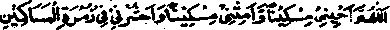

Chapter Two · Section (b): Ahadith regarding the evils of miserliness
5. Women in large numbers going to Jahannam
A Hadith says that when, during Salaat-ul-Kusuf, Rasulullah Sallallaho alaihe wasallam was shown both the Jannah and the Jahannam, he saw a great many women in Jahannam. When the Sahabah Radhiallaho anhum asked the reason for that, he said that it was their ingratitude in respect of their husbands. In spite of lifetime of kindness and favours to them, if once there is some unpleasantness, the wife will cry out against the husband unhesitatingly, "I have never received any good turn from you!" Rasulullah Sallallaho alaihe wasallam has also said: Tt is a common habit of women that in spite oi receiving the best possible treatment, they will forget all of that over a single thing happening against their personal wish. Thus, a displeased woman, forgetting all the good done and kindness and favour shown to her by the husband, will openly complain of having had no comfort and ease at home. This is the habitual expression used by women towards their husbands".
The above Ahadith clearly state the reasons for which the majority of women will land in Jahannam and, at the same time, show that the escape lies in giving Sadaqah excessively. When Rasulullah Sallallaho alaihe wasallam addressed the women in the Eidgah, they started removing their jewellery and gave it to Bilal Radhiallaho anho who accompanied Rasulullah Sallallaho alaihe wasallam and made collection for the poor. Nowadays, women pay no heed to such serious Ahadith and, when they do, the burden of Sadaqah foils on the shoulders of the husband who has to give Zakaat or Sadaqah on their behalf. In case they do it directly, the husband is expected to compensate them. They never permit any decrease in their jewellery. Although they cannot help accepting its loss by chance or by theft or by pawning it for celebrating a marriage, etc., they never think of willingly depositing it in the Treasury of Allah Ta'ala for the Akhirah. They leave it behind after death, to be distributed among the heirs and usually sold away at a very cheap price. Most of them waste a lot of money on remodelling and re-fashioning their ornaments from time to time. The main subject in this Hadith is that excess of wealth does lead to unpleasant situations in the end-As Rasulullah Sallallaho alaihe wasallam has said, "The poor Mohqjireen will have a lead of forty years, in entering Jannah, over the rich people of their time", even though the sacrifices and Sadaqaat made by the latter cannot be compared or assessed. Rasulullah Sallallaho alaihe wasallam once made the Du'aa;-

"0 Allah, grant me life as a poor man, cause me to die as a poor man and resurrect me in the company of the poor ones".
When Aishah Radhiallaho anha asked Rasulullah Sallallaho alaihe wasallam the reason for such a Du'aa the reply was that the poor will enter Jannah forty years ahead of the rich of their time and he told Aishah Radhiallaho anha never to disappoint a poor person, saying, "Give him a piece of date and show him kindness and let him be your fovourite; you will be close to Allah Ta'ala on the Day of Judgement". Some Ulama have raised 0 point that, according to this Hadith, the poor will precede even the Amlnyn Alaihemussalam into Jannah, but the author of the present book dears this point by saying that the Hadith states that the matter concerns the poor and the rich of the same class or society; therefore the precedence will take place among each class separately, such as among Ambiya, among Sahabah, and so on for the other groups.